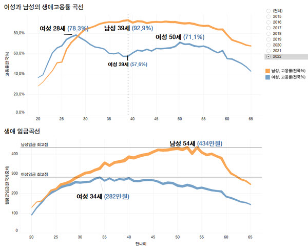
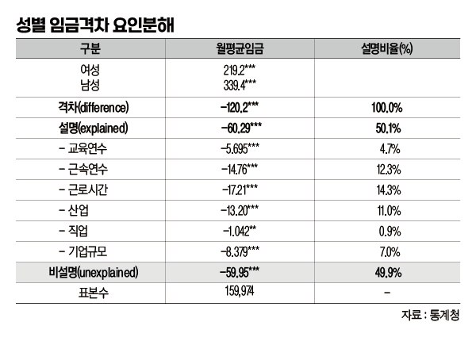
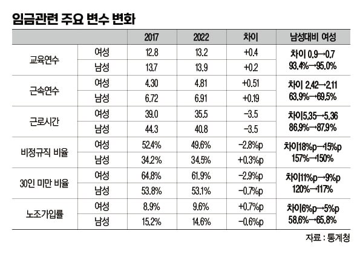
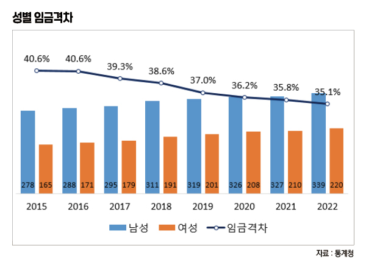
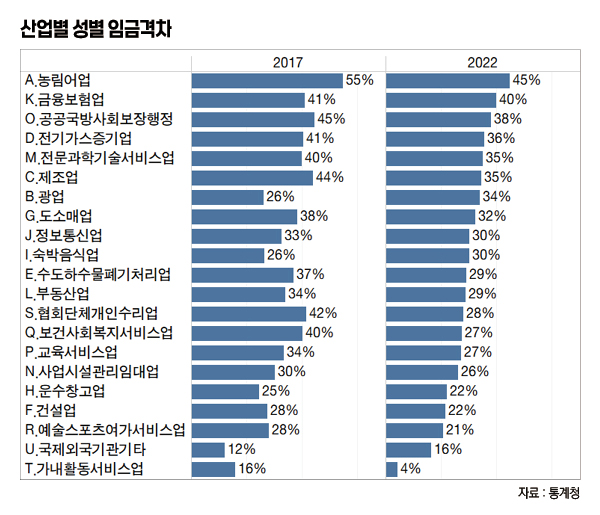

박영삼의 통계로 보는 노동
여성, 39세에 맞는 잔인한 일자리 퇴출
지역별 고용조사 원자료 분석해 보니 … 남녀 고용률 최고점-최저점 맞닿는 연령
우리나라 노동시장에서 여성의 지위는 어디쯤 위치해 있을까. 정부의 공식통계 가운데 20만 가구 이상으로 표본 규모가 가장 크고 산업과 직업의 세부 내용을 확인할 수 있는 지역별 고용조사 원자료를 사용해 살펴본다. 가장 최근에 공개된 마이크로데이터는 지난해 4월치다. 여기에 비정규직 비율과 노조 가입 등의 정보는 지난해 8월 경제활동인구 부가조사 통계를 추가로 사용했다.
남녀 간 차이나 여성의 지위 문제는 이제는 새로운 얘기가 아니다. 어떤 면에서는 젠더이슈라는 이유로 민감한 소재가 돼 있기도 하다. 현재 상태와 함께 지난 5년간의 변화를 살펴봄으로써 성별 격차가 개선된 정도와 정체된 것의 객관적 지점을 확인하고자 한다.
여성고용률 52.9%, 남성에 비해 20%포인트 뒤져
지역별 고용조사로 본 우리나라의 15세 이상 인구는 4천523만4천명이다. 이 가운데 여성은 2천297만3천명으로 전체의 절반이 약간 넘는 50.8%를 차지한다. 하지만 취업자나 임금노동자로 들어가면 여성의 비중은 남성보다 적어진다. 임금노동자 가운데 여성 비율은 45.0% 수준으로 떨어지고 자영업자를 포함한 전체 취업자 중 여성 비중은 43.3%로 줄어든다. 15세 이상 인구의 평균연령이 여성은 49.1세, 남성은 47.3세로 여성의 평균연령이 더 높지만 임금노동자 평균 연령은 남성이 44.9세, 여성이 44.7세로 순서가 역전된다. 50대 이하 여성들이 경력단절 등으로 취업자와 임금노동자 비중이 남성에 비해 낮기 때문이다.
지난해 우리나라의 남성 고용률은 70% 수준에 이르는 반면 여성 고용률은 52.9%에 그치고 있다. 절반 정도의 여성만 취업상태에 있는 것이다. 65세 미만 생산가능인구 기준 고용률은 남성이 78.6%에 이르는 반면 여성은 59.7%에 그친다. 이러한 이유 때문에 우리나라의 고용률이 경제협력개발기구(OECD) 평균(2021년 67.7%, 한국 66.5%)보다 낮은 수준에 있었다.

28·34·39세, 성별 고용률-임금격차의 분기점
우리나라 여성의 고용률이 최정점에 이르는 시기는 25~28세다. 이때의 여성 고용률은 78.3% 수준이고 군복무 등이 겹치는 같은 연령대의 남성 고용율보다 높은 수치를 보인다. 하지만 그 이후는 연령이 증가할수록 계속 고용률이 하락하다가 39세에 57.6%로 25~59세 기간 중 가장 낮은 고용률을 기록한다. 39세는 공교롭게도 여성 고용률 최저점과 남성고용률 최고점이 맞닿는 지점이다. 남녀의 평균 초혼연령과 나이 차를 감안할 경우 현재 39세 연령대의 남녀는 6~7년 전 부부가구를 구성한 뒤 자녀가 초등학교 입학을 앞둔 사람들이라고 볼 수 있다. 이 시기를 지나면서 남성은 54세까지 고용률 수준을 유지하면서 임금증가 곡선을 그리지만 여성 고용률은 비록 서서히 회복돼도 그 수준이 낮을 뿐만 아니라 임금수준은 계속 하향 추세를 보이게 된다. 남녀 간 고용률 격차와 임금격차가 28~34세 시기에 분기점을 맞아 벌어지기 시작하고 39세 이후 고용률 격차는 좁혀져도 임금격차는 줄어들지 않는 것이다. 경력단절의 협곡인 셈이다.
2022년 지역별 고용조사에서 확인되는 성별 임금격차는 중위임금 기준으로는 33.1%, 평균임금 기준으로 35.1%다. 시간당 임금으로는 27.5% 수준의 격차를 보이고 있다. OECD는 중위임금 기준으로 국제비교 통계를 제공하는데 한국은 가입 이후 2021년까지 줄곧 성별 임금격차 1위 국가라는 불명예를 떨쳐 내지 못하고 있다.
성별 임금격차를 이야기할 때는 ’차이’과 ’차별’를 구분해서 설명한다. 담당하는 업무(산업·직업)와 교육연수와 근속·경력·근로시간의 차이에 따른 임금격차는 대체로 합리적인 차이로 인정한다. 경우에 따라 기업규모에 따른 임금격차도 합리적인 차이로 설명하기도 하는데 여기에는 이론(異論)이 있다. 하지만 어떤 객관적인 요인의 차이로도 설명되지 않는 격차는 ’차별’로 인식된다.

임금격차의 절반, 전혀 설명되지 않은 요인
실제로 고려대 노동문제연구소가 지역별 고용조사 원자료로 옥사카-블라인더(Oxaca-Blinder) 방식에 따라 성별 임금격차 요인분해 실증분석을 실시해 본 결과 2022년의 성별 임금격차 35.1%(120만원) 중에서 교육연수와 근속연수, 근로시간, 일하는 산업과 직업의 구성 차이에, 논란이 있는 기업 규모에 따른 차이까기 설명변수로 투입했을 때 17.6%(60만원)는 ’설명되는 격차’인 반면 17.5%(60만원)는 ’설명되지 않는 격차’인 것으로 나타났다. 전체 격차를 100으로 했을 때 절반은 ’차이’라고 할 수 있어도 나머지 ’절반’은 어떻든 차별이라는 것이다.
2017년 이후 지역별 고용조사의 원자료를 분석한 결과를 보면 임금수준에 영향을 미치는 요인들의 긍정적인 변화도 감지된다. 교육연수는 그전에도 이미 남녀 간 격차가 크게 좁혀졌고 2017년 이후 더 개선돼 여성의 교육연수는 남성의 95% 수준에 근접하게 됐다. 근속연수 차이도 2.42년 격차에서 2.11년으로 줄어들었으며, 여성의 비정규직 비율도 남성에 비해 개선됐다. 30명 미만 사업장 비중도 남성은 0.7포인트 줄어든 데 비해 여성은 2.9%포인트 줄었다. 다만 근로시간은 남성과 여성 모두 3.5시간 줄어들어 남성 대비 여성의 상대근로시간은 더 줄어든 것으로 나타난다. 경제활동인구 부가조사 통계에서 확인되는 노조 가입률에서도 여성의 변화가 눈에 띈다. 노조에 가입한 여성노동자가 16만명이나 늘어 여성의 노조 가입률이 8.9%에서 9.6%로 높아졌는데 남성의 노조 가입은 5만3천명 늘었으나 가입률은 15.2%에서 14.6%로 감소한 것과 대비된다.

2017년 이후 상당한 개선, 갈 길은 멀다
이에 따라 성별 임금격차도 점진적으로 개선되는 추세를 보이고 있기는 하다. 남자 임금이 월 295만원일 때 여성 임금은 월 179만으로 성별 격차는 116만원, 39.3%였으나 그 후 개선 속도가 빨라져 2019년에는 37.0% 수준으로 격차가 줄어들었다. 2022년의 성별 임금격차 35.1%도 2017년의 39.3%에 비해서는 4%포인트 이상 축소 개선된 것이다.
성별 격차가 큰 산업은 금융보험업·공공행정·전기가스업·전문과학기술업 등 남성우위 산업들이다. 약간의 변화가 있다면 제조업의 성별 임금격차는 44%에서 35%로 크게 줄었고 공공행정은 45%에서 38%로 줄었으며, 보건복지업은 40%에서 20%로 줄어들었다. 여성 취업자 비중이 높은 도소매업도 38%에서 32%로 격차가 줄었다. 다만 숙박음식업은 격차가 26%에서 30%로 오히려 더 늘어났다.
하지만 27년째 선진국 성별 임금격차 1위 국가, 한국의 갈 길은 여전히 멀고도 분명하다. 같은 일을 하는데도 차별적인 처우를 당한다면 여성들이 일에서 보람을 얻기 어려울 뿐만 아니라 그 자체가 정당화되기 어렵다. 단적으로는 고임금과 저임금 직종의 성별 구성에서 우리나라는 매우 쏠림현상이 심하다. 2022년 지역별 고용조사에서 임금 상위 20개 직종(중분류)의 여성비율은 30%를 넘는 경우가 손에 꼽을 정도다. 반면 임금 하위 20개 직종의 여성비율은 대부분 60%를 넘는다. 더구나 임금 상위 직종의 종사자수는 적은 반면 임금 하위 직종의 종사자수는 대부분 수십만을 넘는 큰 규모다.
사회가 반드시 필요로 하는 서비스를 담당하는 노동이 저임금 여성노동에 의해 떠받쳐지고 있는 것이 우리의 현실이다. 115주년 세계여성의 날을 맞아 성별 격차를 줄이는 방안을 다시 모색해야 하는 이유다.
  
박영삼 고려대 노동문제연구소 노동데이터센터장 (youngsampk@gmail.com)
출처 : 매일노동뉴스(http://www.labortoday.co.kr)